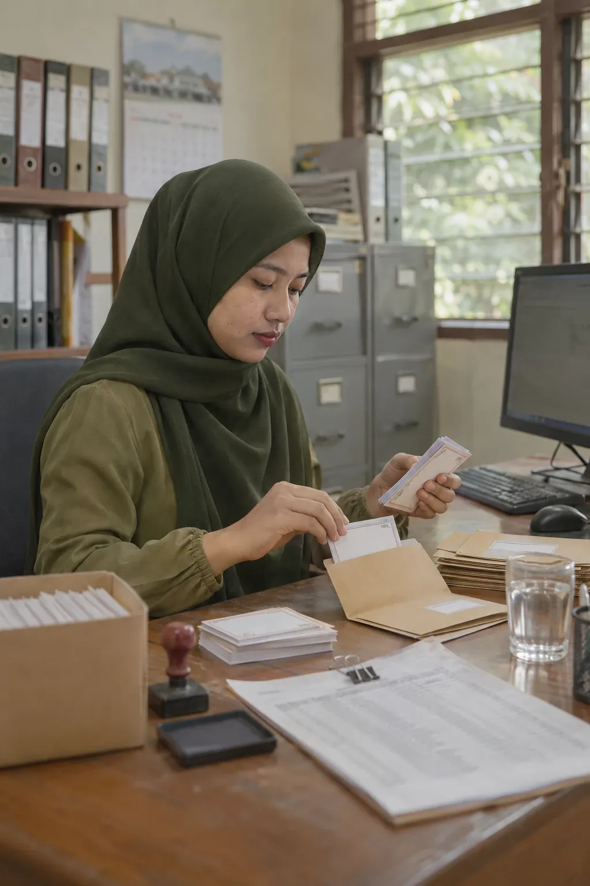

Untuk Siapa
Untuk setiap orang yang terlibat dalam belajar.
Sekolah, perguruan tinggi, dan program pelatihan. Empat peran, dan institusi secara keseluruhan, masing-masing dengan manfaat yang nyata.

01 · Peserta didik
Siswa, mahasiswa, dan peserta pelatihan
Tahu apa yang perlu dikerjakan berikutnya.
- 01Tugas dan langkah berikutnya terlihat di satu halaman.
- 02Bantuan bertahap saat belajar: arah berpikir lebih dulu, lalu langkah demi langkah.
- 03Hasil sendiri per tujuan pembelajaran, tanpa peringkat dan tanpa dibandingkan dengan teman.
- 04Sertifikat yang keasliannya dapat diperiksa orang lain.

02 · Pendidik
Guru, dosen, dan fasilitator
Tahu apa yang perlu diulang besok, dan untuk siapa.
- 01Bagian dan soal yang sulit bagi kelas, termasuk pilihan jawaban yang paling banyak dipilih.
- 02Peserta didik yang mungkin perlu bantuan, sebagai bahan pertimbangan, bukan label.
- 03Materi yang bisa diberikan ke kelas, ditambah materi Anda sendiri.
- 04Program pengembangan profesional yang Anda ikuti, terpisah dari penilaian kinerja.

03 · Pimpinan
Kepala sekolah, kepala departemen, dan dekan
Melihat pola, bukan menebak.
- 01Pola penguasaan di kelas-kelas dalam wewenang Anda.
- 02Angka yang jelas dasarnya: ditampilkan bila datanya cukup, dengan keterangan bila belum.
- 03Ringkasan kelas dan sekolah yang siap dicetak untuk rapat.
- 04Membuka catatan satu peserta didik hanya dengan sengaja, dan tindakan itu tercatat.

04 · Administrator
Operator sekolah dan admin institusi
Mengelola akses, bukan keputusan belajar.
- 01Akun, kelas, rombel, dan peran di satu tempat.
- 02Kartu kelas untuk peserta didik, yang dapat diganti bila hilang.
- 03Pindah, naik kelas, dan purnatugas tanpa kehilangan catatan yang perlu dipertahankan.
- 04Perubahan penting mencatat siapa, apa, kapan, dan alasannya.

05 · Institusi secara keseluruhan
Yayasan, badan pengelola, dan pimpinan institusi
Catatan belajar yang dapat dijelaskan.
- 01Materi bersama, ditambah materi milik institusi sendiri.
- 02Data institusi Anda dipisahkan dari institusi lain.
- 03Catatan yang tetap utuh saat orang datang dan pergi.
- 04Dasar yang jujur untuk rapat, keputusan, dan pelaporan.
Minta demo
Lihat PINTAR dari sudut pandang Anda.
Ceritakan peran Anda, dan kami menyiapkan demo terpandu dengan data contoh yang sesuai.